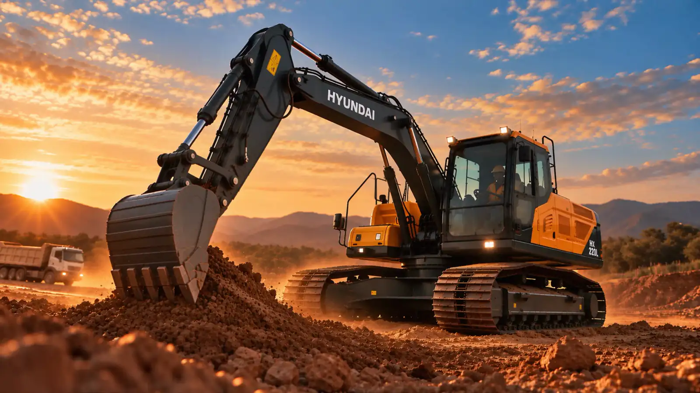
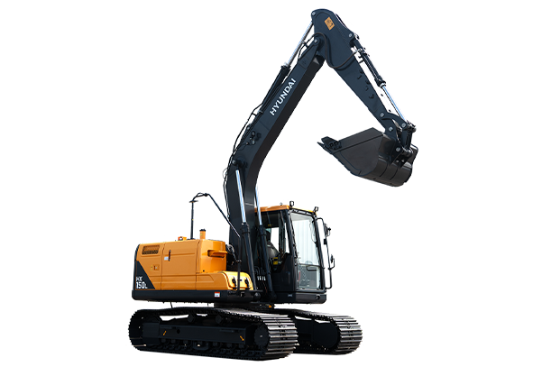
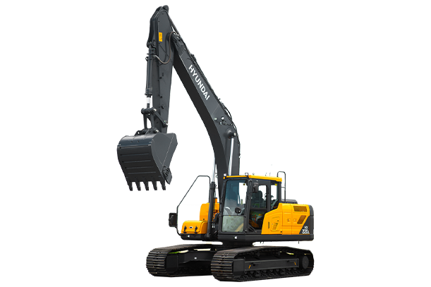
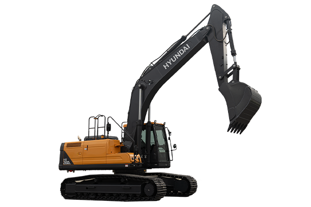

Motor
- Modelo
- Cummins QSB 6.7 (Tier 3)
- Potência bruta
- 166 HP a 2.050 rpm
- Potência líquida
- 163 HP a 2.050 rpm
- Torque máximo
- 658 N.m a 1.800 rpm
- Cilindrada
- 6,7 litros, 6 cilindros em linha

Escavadeira hidráulica Hyundai
Domine o terreno. 22 toneladas de engenharia para escavar, carregar e produzir sem pausa.
HX220L · Série HX
Fale com um consultor BMC Hyundai e receba a proposta da HX220L dimensionada para a sua operação.
Role para explorar
Dados da ficha técnica oficial Hyundai, configuração com lança de 5.680 mm, braço de 2.920 mm e sapata de 700 mm.
Telemetria Hi MATE, controle de fluxo de acessórios e engate rápido são opcionais. Imagens podem conter equipamentos opcionais.

14.890 kg · 110 HP · 0,65–0,76 m³

22.720 kg · 166 HP · 0,92–1,46 m³

26.480 kg · 190 HP · 1,16–1,74 m³
Fale com um consultor BMC Hyundai e receba a proposta da HX220L para a sua operação.
Solicitar orçamento